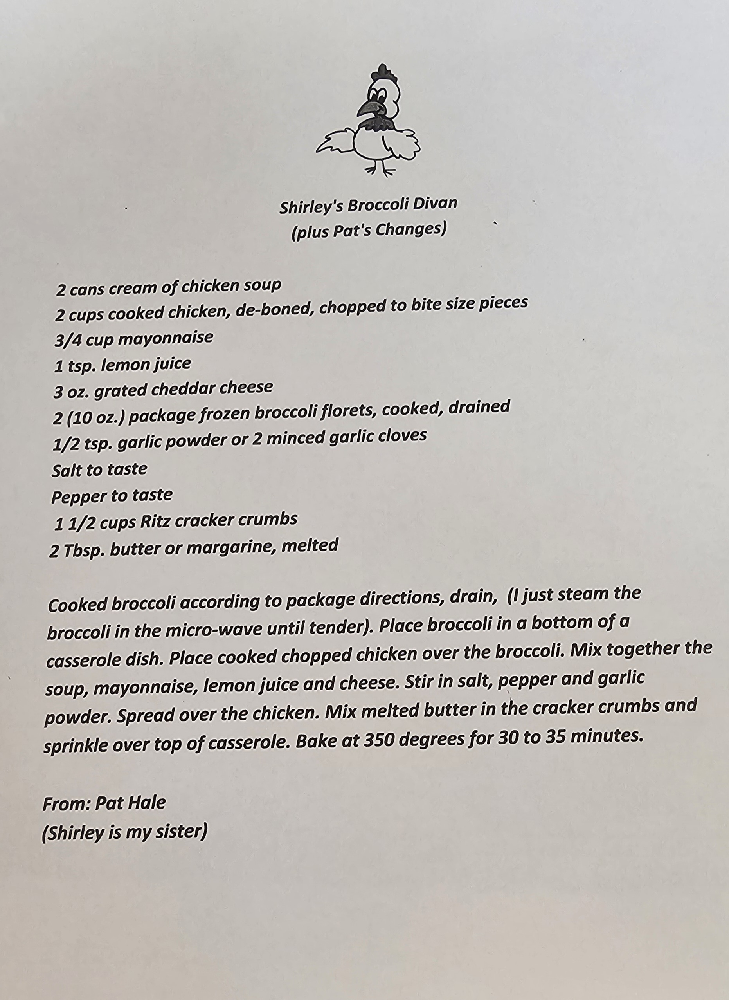

Ingredients:
- 2 cans cream of chicken soup
- 2 cups cooked chicken, de-boned, chopped to bit sized pieces
- 3/4 cup mayonnaise
- 1 tsp lemon juice
- 3 oz grated cheddar cheese
- 2 10 oz packages of frozen broccoli florets, cooked, and drained
- 1/2 tsp garlic powder or 2 minced garlic cloves
- salt and pepper to taste
- 1 1/2 cups ritz cracker crumbs
- 2 tbsp butter melted
Instructions:
- Cook broccoli according to package directions (Steam the broccoli in the microwave until tender) and drain
- Place broccoli in the bottom of a casserole dish and place cooked chicken over the broccoli
- Mix together the soup, mayonnaise, lemon juice and cheese and stir in salt, pepper, and garlic powder
- Spread over the chicken and mix melted butter in the cracker crumbs and sprinkle over the top of the casserole
- Bake at 350 degrees for 30 to 35 minutes
